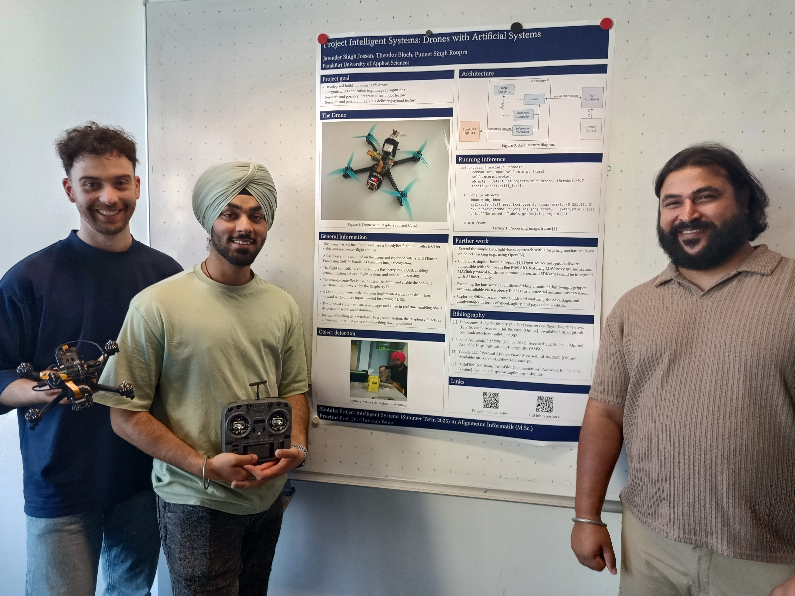
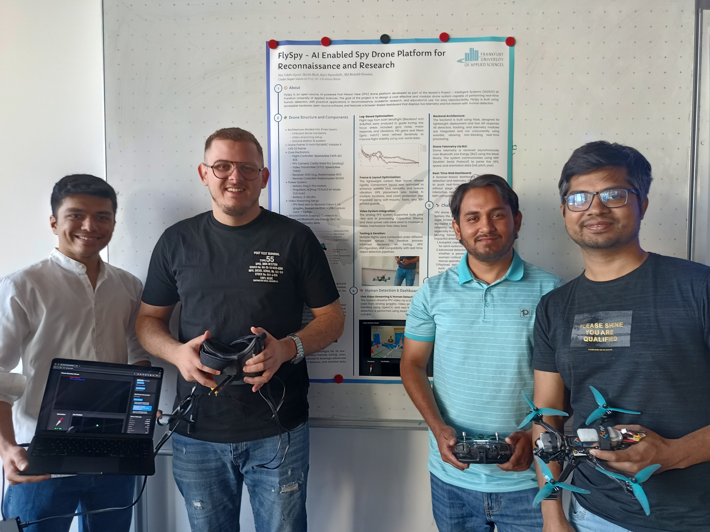
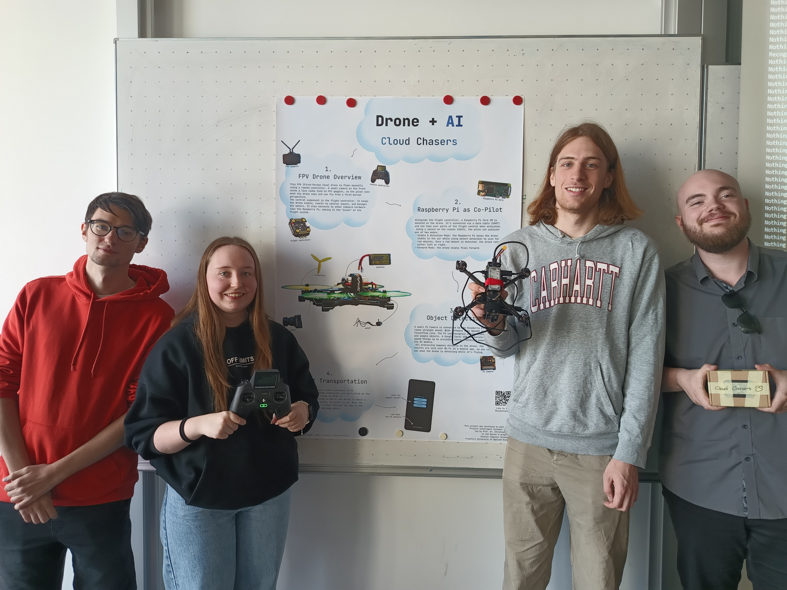

|
|
Jump to the page in German language
|
The application possibilities of drones are diverse, but access is costly and technically complex. This is unfortunate from the perspective of universities, because the combination of drones and artificial intelligence opens up exciting scenarios for research and teaching.
Participants in the project will develop, investigate, and document affordable AI capable drones that are suitable for teaching and research.
Groups of up to 4 people each develop and build a drone. Individual steps are:
| Date | Time | Room | Contents |
|---|---|---|---|
| 10.04.2025 | 10:00-13:00 | 1-234 | Introductory session, group formation, requirements analysis, project planning (schedule) |
| 17.04.2025 | 10:00-13:00 | 1-234 | Presentation of intermediate results by all teams, development and construction of drones |
| 24.04.2025 | 10:00-13:00 | 1-234 | Presentation of intermediate results by all teams, development and construction of drones |
| 30.04.2025 | 10:00-11:00 | 1-234 | Special session |
| 01.05.2025 | ----- | ----- | Labor Day |
| 08.05.2025 | 10:00-13:00 | 1-234 | Presentation of intermediate results by all teams, development and construction of drones |
| 15.05.2025 | 10:00-13:00 | 1-234 | Presentation of intermediate results by all teams, development and construction of drones |
| 21.05.2025 | 15:00-16:00 | 10-MZH | !!! Flight tests in the multi-purpose hall !!! |
| 22.05.2025 | 10:00-13:00 | 1-234 | Presentation of intermediate results by all teams, development and construction of drones |
| 28.05.2025 | 10:00-11:00 | 1-234 | Special Session |
| 29.05.2025 | ----- | ----- | Ascension Day |
| 05.06.2025 | 10:00-13:00 | 1-234 | Presentation of intermediate results by all teams, development and construction of drones |
| 12.06.2025 | 10:00-11:15 | 10-MZH | !!! Flight tests in the multi-purpose hall !!! |
| 12.06.2025 | 10:00-13:00 | 1-234 | Presentation of intermediate results by all teams, development and construction of drones |
| 19.06.2025 | ----- | ----- | Corpus Christi |
| 26.06.2025 | 10:00-11:15 | 10-MZH | !!! Flight tests in the multi-purpose hall !!! |
| 26.06.2025 | 10:00-13:00 | 1-234 | Presentation of intermediate results by all teams, development and construction of drones |
| 03.07.2025 | ----- | ----- | Business trip |
| 10.07.2025 | 10:00-13:00 | 1-234 | Demonstration and presentation of the project results of all teams, closing session |
|  |  |  |
| Result of the course evaluation |
You can best reach me by e-mail: christianbaun@fb2.fra-uas.de
|
Prof. Dr. Christian Baun Frankfurt University of Applied Sciences (1971-2014: Fachhochschule Frankfurt am Main) Faculty 2: Computer Science and Engineering Last updated: July 10th 2025 |